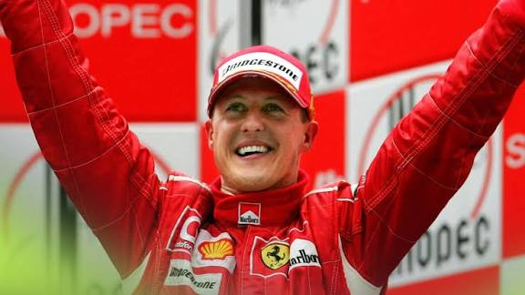
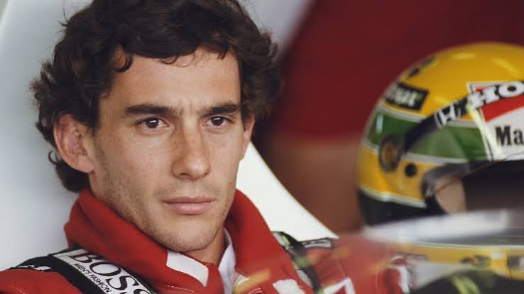
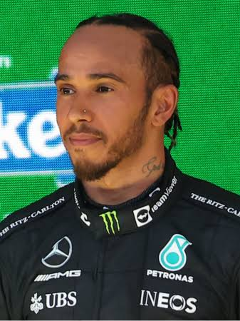

The Teams of Formula 1

Formula 1 is made up of racing teams known as constructors. Each team designs and builds its own car and employs two drivers to compete in the championship.
Teams also employ engineers, mechanics, strategists and other specialists. Everyone works together to make the car as fast and reliable as possible.
THE CONSTRUCTORS
Famous F1 Teams
Ferrari
Ferrari is one of the most historic and recognisable teams in Formula 1. Its famous red cars have competed since the championship's early years.
Mercedes
Mercedes is a major name in modern Formula 1. The team achieved an extraordinary run of championship success during the hybrid era.
McLaren
McLaren has a long history in the sport and has won multiple drivers' and constructors' championships.
Red Bull Racing
Red Bull Racing became a leading championship-winning team through strong engineering and driving performances.
BEHIND THE WHEEL
Legendary Formula 1 Drivers
Formula 1 has produced many unforgettable drivers. These champions are remembered for their talent, determination and achievements in motorsport.

Michael Schumacher
Famous team: Ferrari
Championships: 7
A seven-time world champion who helped Ferrari dominate much of the early 2000s.

Ayrton Senna
Famous team: McLaren
Championships: 3
Remembered for his incredible qualifying ability and legendary performances in difficult conditions.

Lewis Hamilton
Famous teams: McLaren and Mercedes
Championships: 7
A seven-time world champion known for his speed, consistency and achievements in Formula 1.
max verstappen
Famous teams: Red Bull Racing
Championships: 4
Max Verstappen is a multiple Formula 1 World Champion. Known for his incredible speed, aggressive racing style and exceptional driving skills, he has become one of the most successful drivers of his generation.
UNDERSTANDING THE SPORT
How the Championships Work
Formula 1 has two main championships. Drivers earn points based on their finishing positions. These points count towards the Drivers' Championship.
Teams also earn points from both drivers. These points determine the Constructors' Championship.
Grand Prix Points System
| Finishing Position | Points |
|---|---|
| 1st | 25 |
| 2nd | 18 |
| 3rd | 15 |
| 4th | 12 |
| 5th | 10 |
| 6th | 8 |
| 7th | 6 |
| 8th | 4 |
| 9th | 2 |
| 10th | 1 |
Standard Grand Prix race scoring. Sprint races have a separate points system. This table excludes any additional fastest-lap point.